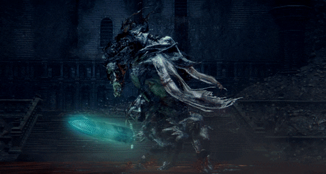
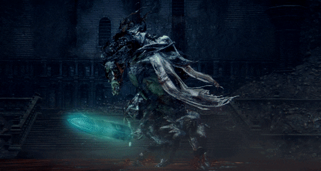

O Pesadelo do Caçador é a primeira camada do tormento eterno destinado aos caçadores do passado. Fragmentado e incoerente, esse mundo onírico mistura locais familiares de Yharnam com estruturas deformadas, conectadas por rios de sangue, pontes partidas e torres em colapso. Aqui, os caçadores enlouquecidos são presos por seus pecados, caçando uns aos outros por toda a eternidade. Tudo nesse mundo remonta à origem da Caçada, revelando os horrores que precederam a loucura atual.
O Pesadelo do Caçador é uma dimensão distorcida onde os pecados da Igreja da Cura e a insanidade dos caçadores tomam forma. Fragmentado como um espelho quebrado, o local mistura cenários de guerra, hospitais esquecidos e rios de sangue coagulado. O tempo está quebrado, e os caçadores ali presos estão condenados a reviver uma caçada eterna, consumidos por culpa e desespero. O ambiente é repleto de corpos mutilados, prédios inclinados e vestígios de experiências fracassadas, tornando o lugar um reflexo grotesco da própria Yharnam.
Os caçadores que foram tomados pela loucura vivem eternamente nesse lugar. Muitos mantêm sua perícia e armas, tornando-os adversários imprevisíveis. Também há aberrações orgânicas criadas a partir de experimentos fracassados com o sangue, incluindo monstros colossais e cães fundidos a carne humana.
Laurence foi o fundador da Igreja da Cura e o responsável por espalhar o uso do sangue antigo em Yharnam. No entanto, seu destino final foi de completa bestialização. Encontrado adormecido em um altar, ele desperta em chamas, simbolizando o preço de brincar com forças além da compreensão. Sua luta é marcada por ataques flamejantes e uma fúria que incinera tudo ao redor, fazendo dele uma lembrança ardente do fracasso da Igreja.
Ludwig foi o primeiro caçador da Igreja da Cura. Honrado no passado, tornou-se um monstro deformado e alucinado. Em sua primeira forma, Ludwig é uma criatura animalesca, brutal e irracional. Mas conforme a batalha progride, ele recupera sua lucidez ao empunhar a Espada Sagrada da Lua. Nesse momento, sua luta torna-se quase nobre — uma tragédia cavaleiresca sobre fé, loucura e arrependimento.
 
